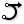

 Arc SED
Component Index > Curve > Curve > Primitive > Arc
Create an arc defined by start point, end point and a tangent vector.
Inputs
| Name | ID | Description | Type |
|---|---|---|---|
| Start | S | Start point of arc | Point |
| End | E | End point of arc | Point |
| Direction | D | Direction (tangent) at start | Vector |
Outputs
| Name | ID | Description | Type |
|---|---|---|---|
| Arc | A | Resulting arc | Geometry |
| Plane | P | Arc plane | Plane |
| Radius | R | Arc radius | Number |
Copyright © 2016 Robert McNeel & Associates.